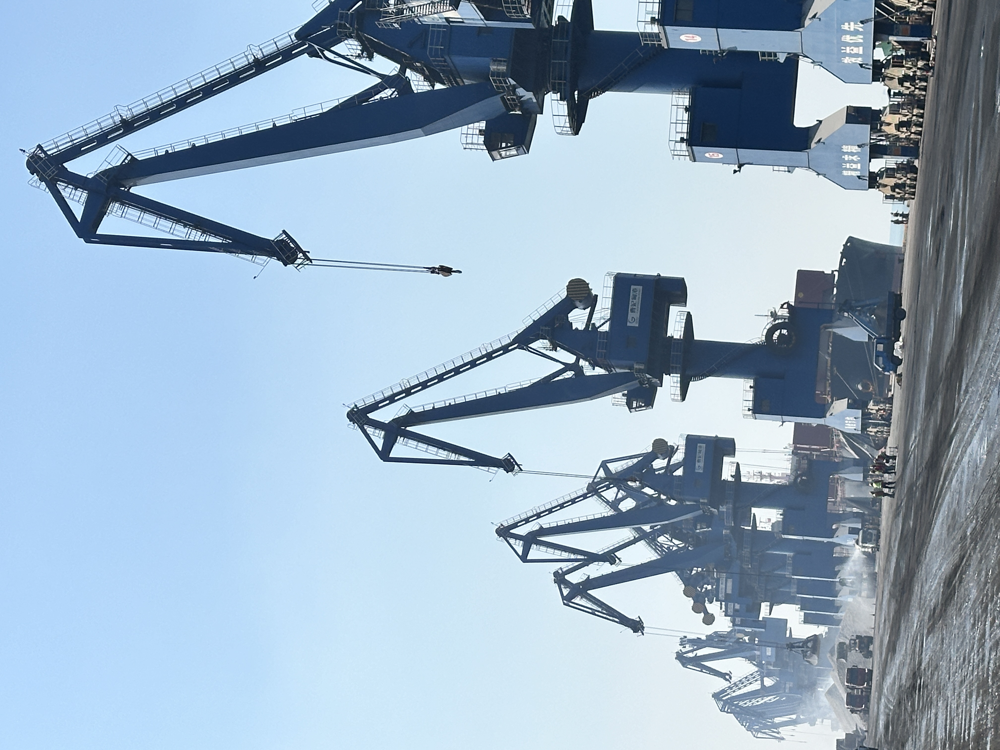

West Africa's Clinker Import Rebound Shows Why Freight Discipline Still Wins
West African clinker imports climbed 21% year on year to 3.53Mt in the first quarter. That matters because it cuts through the easy surplus narrative: even when global supply loosens, demand pockets with import dependence still reward suppliers that can align cargo, timing, freight and port execution.
西非熟料进口回升，说明真正决定成交的仍是运力与执行纪律
今年一季度，西非熟料进口同比增长 21%，达到 353 万吨。这个信号的价值在于，它打破了“全球供应宽松就一定容易成交”的简单判断：只要市场仍依赖进口，真正吃到需求的，仍是那些能把货源、船期、运费和港口执行对齐的供应方。

Recent market reporting offered a useful combination of signals. Argus cited trade-partner data showing that clinker exports to West African countries rose 21% year on year to 3.53Mt between January and March. Around the same time, broader market commentary pointed to a more stable 2026 global cement demand picture with surplus capacity building in some regions, while other coverage still described high prices and tight availability in selected markets. Put together, the message is clear: global surplus on paper does not erase localized import pull.

1. West Africa is reminding the market that import dependence is sticky
A 21% rise in first-quarter clinker inflows is not a marginal move. It suggests that in parts of West Africa, demand is still being met through imported intermediate material rather than purely local clinker self-sufficiency. For traders and suppliers, that matters more than headline debates about global overcapacity. Import-reliant markets behave according to their own plant balances, grinding demand, inventory cycles and project timing. If those conditions stay supportive, cargoes still move.
This is also why regional trade lanes remain valuable. Even when the wider market starts to talk about softer supply conditions, the actual buying window in an import market can stay firm if domestic output is constrained or if downstream cement demand needs faster replenishment.
2. Surplus capacity helps only when logistics can translate it into delivered tons
Recent 2026 outlook commentary has emphasized that global cement demand is broadly flat while surplus capacity is expanding in some regions, especially as export availability rises from parts of Asia. In theory, that should improve procurement conditions for some buyers. In practice, the buyer does not consume theory. The buyer consumes a ship that arrives on time, a cargo that matches spec, and a discharge plan that does not create avoidable cost.
That is the hidden filter inside many clinker trades. Freight volatility, vessel positioning, berth congestion, document handling and loading discipline can erase the advantage of a nominally cheaper origin. A market may look looser in aggregate and still feel tight at execution level.

3. The next edge for suppliers is commercial calm plus operational discipline
For a supplier serving clinker or other bulk cementitious materials, the lesson is practical. A good market position now requires more than just available tonnage. Buyers are likely to compare origins on reliability, not only price. They want confidence on laycan, loading speed, cargo consistency and downstream scheduling. The suppliers that look easiest to work with often capture more value even in competitive markets.
Takeaway: West Africa's import rebound is a reminder that trade does not flow simply because surplus exists. It flows when supply can be converted into delivered material with fewer operational frictions. In 2026, freight discipline still wins.
最近几条公开行业信息放在一起看，很有启发。Argus 援引贸易伙伴数据称，今年 1 到 3 月，出口到西非国家的熟料同比增长 21%，达到 353 万吨。与此同时，其他市场评论提到，2026 年全球水泥需求整体趋稳，部分地区过剩产能正在增加；但也有报道继续强调，一些市场仍然存在高价格与阶段性紧张供应。把这些信号叠在一起，结论很清楚：全球层面的“宽松”并不会自动抹平区域性的进口拉力。
1. 西非再次提醒市场：进口依赖并不会轻易消失
一季度进口量同比增加 21%，这不是边角变化，而是一个足够明确的需求信号。它说明在西非部分市场，终端需求仍需要通过进口熟料来支撑，而不是完全依靠本地熟料自给。对贸易商和供应方来说，这比“全球是否过剩”的大叙事更重要。进口型市场有自己的运行逻辑：本地熟料平衡、粉磨需求、库存周期、项目节奏，这些因素共同决定了货会不会继续流入。
这也是为什么区域航线仍然有价值。即使大盘开始讨论供应转松，只要进口市场的国内产能受限，或者下游水泥需求需要更快补库，真实采购窗口依然可以维持坚挺。
2. 过剩产能只有被顺利运成交付吨位时，才真正有意义
近期一些 2026 年展望认为，全球水泥需求大体持平，但部分地区过剩产能在扩大，尤其是亚洲部分区域的出口货源增加。理论上，这会改善一部分买家的采购条件。但现实里，买家并不消费“理论宽松”，买家消费的是准时到港的船、符合规格的货，以及不会额外制造成本的卸港执行。
这正是许多熟料贸易里真正的过滤器。运费波动、船位调配、泊位拥堵、单证处理、装港纪律，都可能把一个看起来更便宜的产地优势吃掉。于是就会出现一种常见情况：整体市场看似宽松，但执行层面依然很紧。
3. 下一步供应优势，来自商务稳定感与执行纪律的结合
对于服务熟料和其他散装胶凝材料的供应方来说，这个启示很务实。如今更好的市场位置，不只是“我有货”，而是“我更容易被放心地下单”。买家会比较的不只是价格，还包括装期把握、装货效率、货物一致性和下游排产衔接。越是看起来省心、稳定、少出意外的供应方，越可能在竞争中拿到更高质量的成交。
结论很简单：西非进口回升再次提醒我们，贸易不会因为“有过剩”就自然发生。只有当供应能被更少摩擦地转换成真正交付的吨位时，贸易才会发生。到了 2026 年，运力与执行纪律仍然是胜负手。
Explore products or discuss your inquiry.
If this market signal is relevant to your sourcing plan, you can review our core product pages or contact us with laycan, quantity, target specification and loading method.
Request a quote